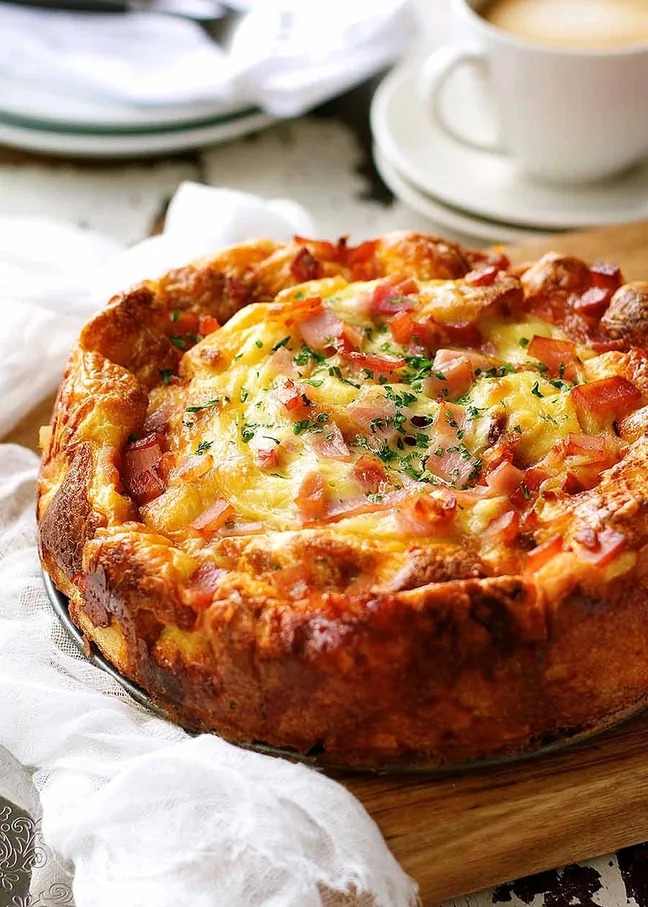

Cheese & Bacon Strata Cake
| Lunch | Afternoon Snack | Dinner | Drinks
Description
A Breakfast Casserole - in cake form! All the morning essentials present - bacon, eggs, milk, bread and cheese.It's a breakfast strata that tastes like a cross between quiche, omelette and savoury French toast with cheesy custardy insides, and a golden crusty surface.Excellent way to make use of leftover bread. Make it now or leave it overnight, then just pop it in the oven the next day!cious breakfast option!

Ingredients
- Bread
- Eggs
- Bacon
- Cheese
- Milk
Steps
- Slice / tear bread into 2.5cm / 1″ pieces. Leave the crust on unless you're using a really thick-crusted bread.Nobody wants super-thick, chewy crust inside when it's supposed to be soft and custardy!
- 7 cups bread - You need 7 cups of bread in total, just lightly pushed down to fill the cup. I can't give you a weight because different breads differ in weight for the same volume.
- Whisk together the eggs and milk;
- Soak bread - Mix the bread in until it's totally soaked through with egg mixture, then stir through most of the cooked bacon and cheese (hold some back for sprinkling);
- Pour into cake pan - Pour the mixture in a very well-buttered non-stick cake pan. A springform pan is the handiest but a cake pan without a loose base is fine too because the strata cake holds together well enough to turn it out. If you know your cake pan is prone to being sticky, line it with parchment paper because eggs are the ultimate food glue and added cheese makes it like superglue!
- Bake 45 minutes - Cover with foil and bake 25 minutes, then remove cover and bake for a further 15 to 20 minutes until the top is golden and crusty.Check with a skewer inserted into the centre to ensure no raw egg mixture is on it. Let it stand for a few minutes to stabilise then remove the cake pan sides (if you used a springform pan) or turn it out carefully.
To serve, slice it up just like cake. If you're the civilised sort, eat it with a fork but it holds together well enough to just eat it with your hands. 😉Excellent food for on the go! - Raman shaikh